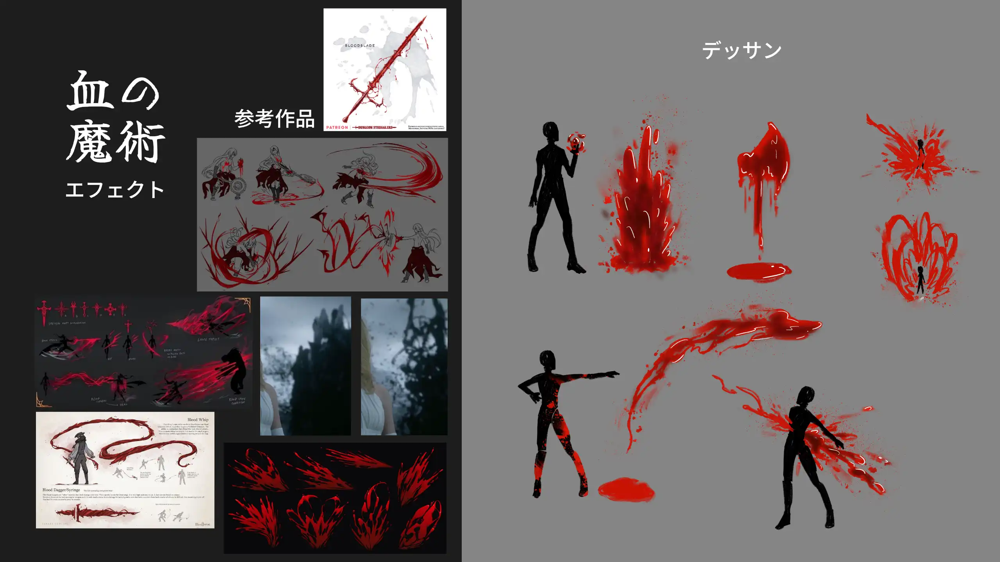
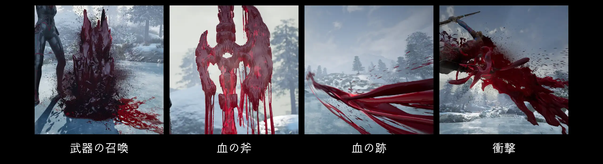
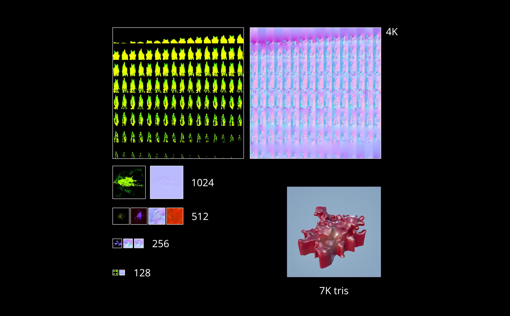
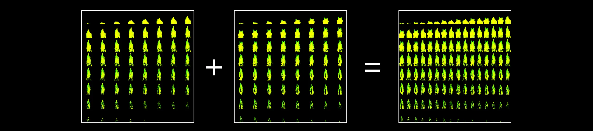
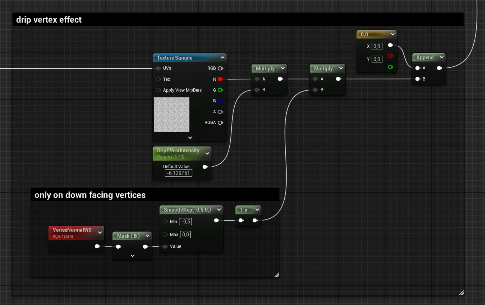
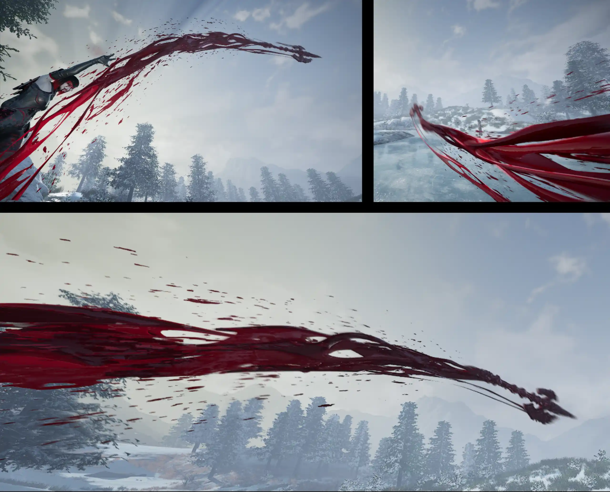

2025年12月
Unreal Engine, Houdini, Liquigen, Substance Designer
私はエフェクトを制作し、カメラワークを工夫しました。
斧のモデル・背景・キャラクター・キャラクターアニメーションは他のアーティストのアッセットです。

「血の魔術」はイベントシーンで使えるリアルタイム向けエフェクトです。スプライト、2Dフリップブック、メッシュフリップブック、VATという各種の液体のエフェクト制作技法を練習する機会となりました。4つの要素があります：

魔女が大きな血の飛び散りを生じ、血の武器が表します。下記のとおり制作しました：
１．Houdiniで、プロシージャルアニメーションを使ったメッシュを制作しました。
２．Liquigenで、①のメッシュを使ったエミッタに基づき、流体シミュレーションを実施しました。
３．スプライト・フリップブック・メッシュ等の形式でエクスポートしました。
４．Houdini・Substance Designerで、③のメッシュ・テクスチャをポストプロセスしました。
５．Unreal Engine・ナイアガラで、作り上げました。
最適化を考慮し、立体感を与えるために2Dと3Dアッセットを融合しました。「武器の召喚」のために制作したアッセットが以下に表示されています。

見えるように、４Kテクスチャは２つしかありません。最適化するための要点は、２つのフリップブックを融合し、１つのテクスチャにすることでした。このように、最適化を維持しながら形の変化を加えることができました。

立体感を更に与えるために、メッシュも入れました。VATやメッシュフリップブックではなく、普通のメッシュです。 頂点を、そのローカル座標の累乗の計算し、動かしました。また、サブサーフェスに影響を与えるために、Houdiniで、頂点カラーを濃度の値で設定しました。
血の斧のシェーダーは頂点を動かし、（UV Distortion）UVの値を変化させ、ノーマルマップも動かしました。 頂点の動かしに関しては、下に向かう頂点をマスクし、ボロノイノイズに基づきZ軸に沿い頂点を動かしました。 サブサーフェスに関しては、本来の斧アッセットのアーティストが作ったメタリックマップを調整し、再利用しました。

滴る血液に関しては、１つのフリップブックテクスチャを利用しました（ノーマルマップを含め２つ）。 「武器の召喚」のエフェクトのように、４つのフリップブックを融合し、１つのテクスチャにしました。今回は同時にシミュレーション・レンダリングを行いました。
血の跡のエフェクトを制作するために、３つのテクスチャを使用しました：
１．アルファ、濃度、削れる表現（ディゾルブ）
２．ノーマルマップ
３．削れる表現中で使うノーマルマップ
それらはタイリングテクスチャです。また、前述の利用した最適化方法のとおり、２つの跡を１つのテクスチャにしました。

衝撃のエフェクトを制作するために、前述の説明した手法を用いました。 なるべく、前述の利用したテクスチャを再利用しました。 今回、メッシュフリップブックも利用しました。 大きなテクスチャの加えを回避するためにVATを使いませんでした。
頂点カラーをXYZ速度の値で設定し、それに基づき座標を補間し、スローモーションのエフェクトをできました。 2Dフリップブックの際はモーションベクターマップを利用しました。
ポートフォリオ制作過程